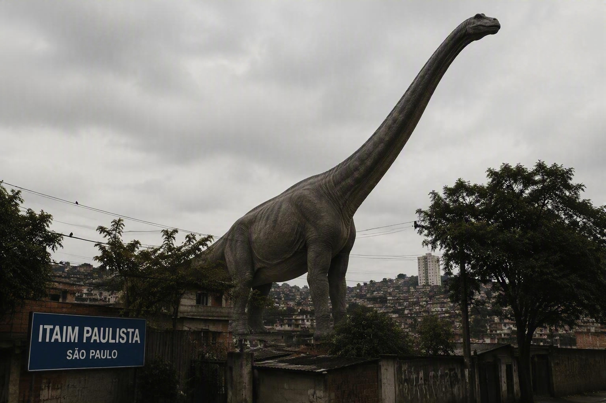

Suposto Braquiossauro é visto caminhando próximo ao bairro de Itaim Paulista
Por Jurassic News – São Paulo, 17 de agosto de 2026

Moradores registram animal de grande porte
Moradores do bairro Itaim Paulista, na zona leste da capital paulista, afirmam ter observado uma gigantesca criatura de pescoço longo caminhando por uma área de vegetação próxima à região.
As imagens mostram uma silhueta elevada acima das árvores, levando muitos internautas a comparar o animal a um Braquiossauro.
Especialistas pedem cautela
Pesquisadores destacam que Braquiossauros viveram há aproximadamente 150 milhões de anos e não há qualquer evidência científica de sua existência atualmente.
Segundo os especialistas, a distância das gravações e a baixa qualidade dos registros tornam difícil identificar com precisão o objeto observado.
Área é monitorada
Equipes municipais realizaram inspeções na região após o aumento na circulação de curiosos.
Nenhum vestígio concreto foi encontrado até o momento.
Gigante pré-histórico desperta fascínio
O suposto avistamento chamou atenção por lembrar um dos maiores dinossauros terrestres conhecidos pela ciência.
Museus e centros educativos da cidade registraram aumento na procura por informações sobre saurópodes.